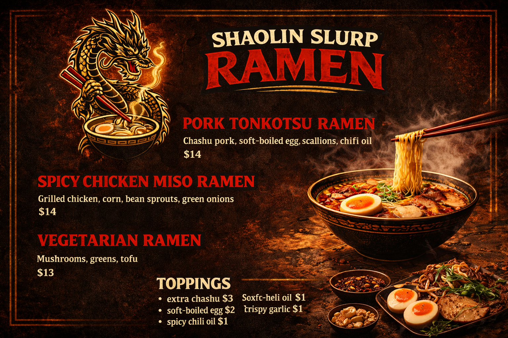
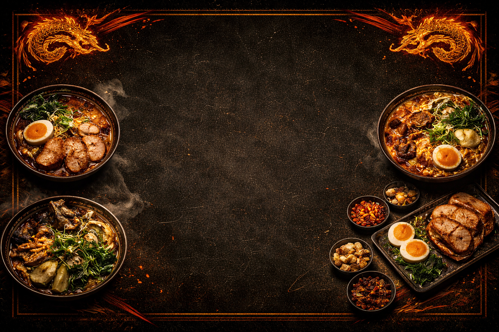

Discipline Over Hype
The kitchen is quiet when he works. No fanfare. No shortcuts. Just the work.
Founder of Shaolin Slurp
Discipline in the broth.
Chaos in the streets.
Raised on late-night VHS kung-fu tapes.
Built patience the way you build broth — slow.
No culinary school.
No silver spoons.
Just repetition.
Heat.
Respect for the blade.
The first broth failed.
The second one almost made it.
The third?
That one hit different.
He didn’t open a restaurant.
He built a dojo on wheels.
Not rules. Not principles. Just the way things are.
The kitchen is quiet when he works. No fanfare. No shortcuts. Just the work.
Every bone. Every scrap. Every hour at low heat. All of it counts. Nothing leaves the pot early.
Every component earns its place. Nothing wasted. Nothing rushed. Respect the process.
A bowl of ramen is an agreement. He holds up his end. The community holds up theirs.
The truck doesn’t stay. The craft doesn’t pause. Stay sharp or fall behind.
2014
2017
2021
2023
Now


This isn’t just ramen.
It’s training.